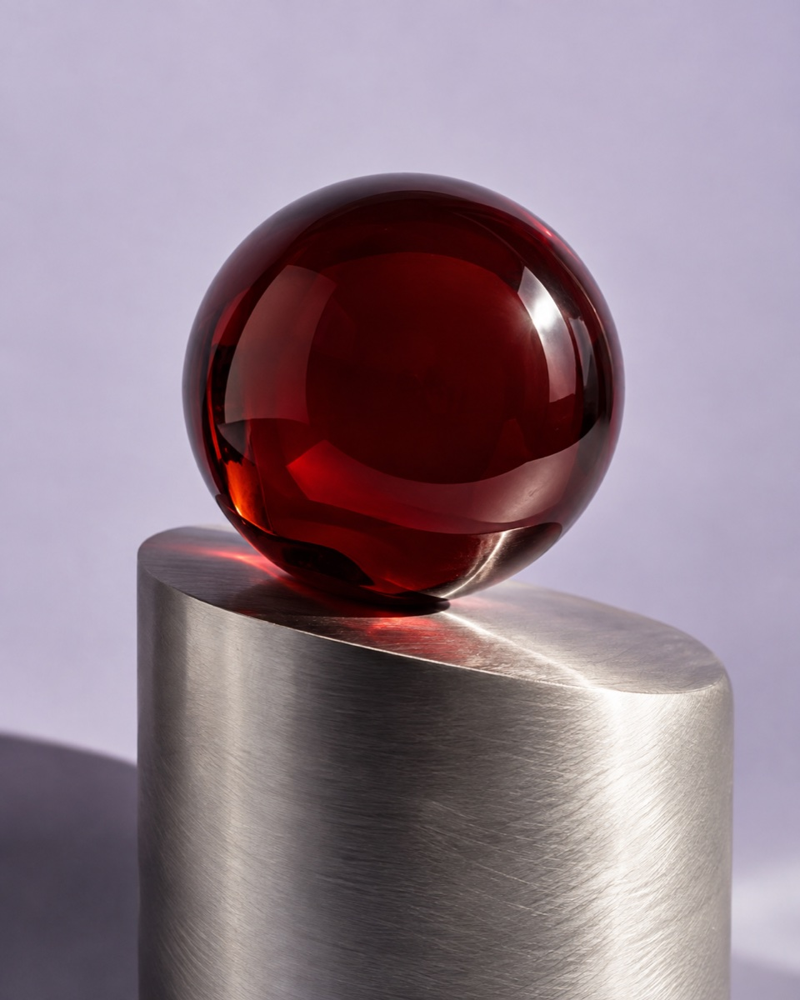
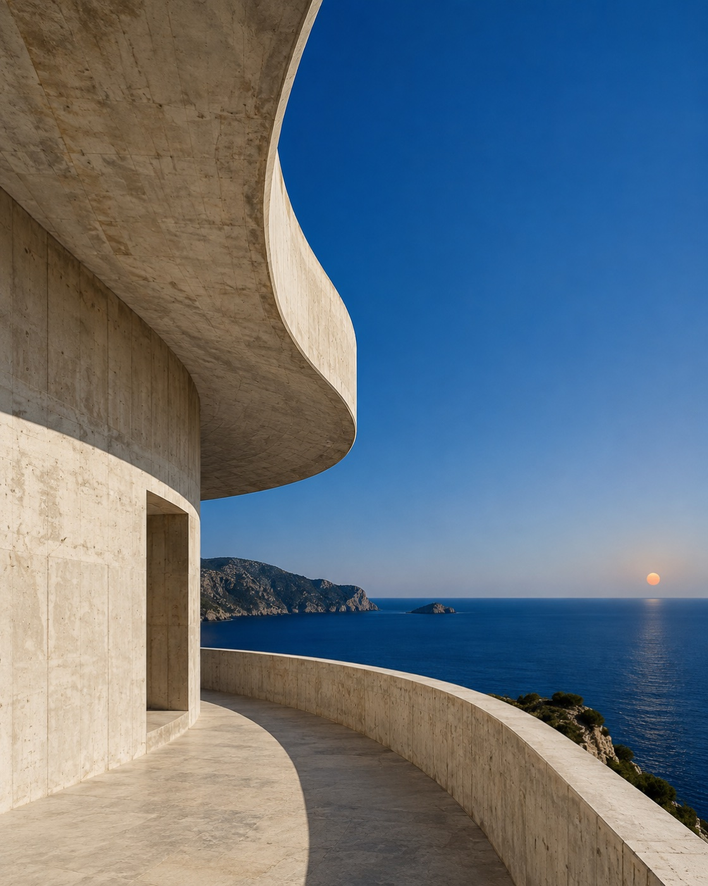
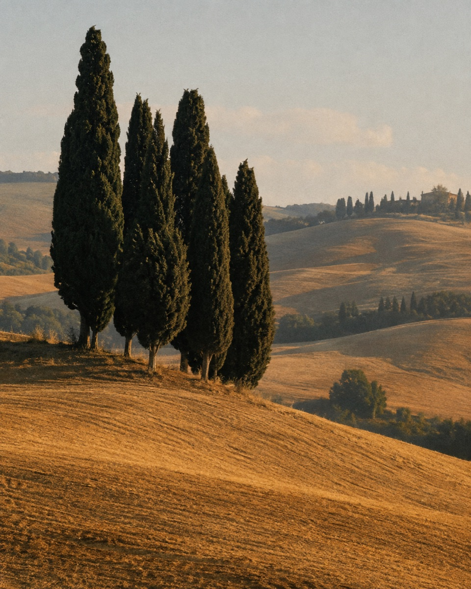

Pinterest, one image at a time.
Saved in this browser. Yours to come back to.
Something catch your eye?Open an image and press M.
Install the extension as PinGlide in Chrome.
chrome://extensions
manifest.json
Click a Pin, then use ← and → to browse.